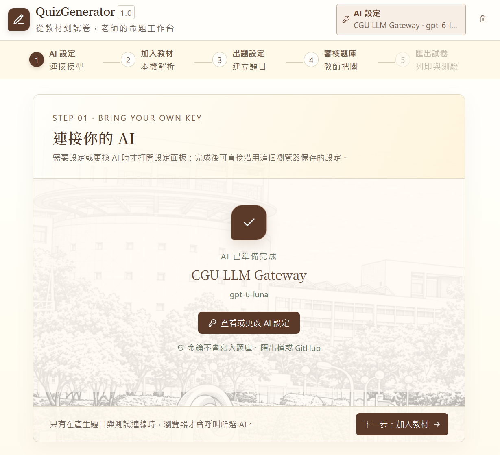
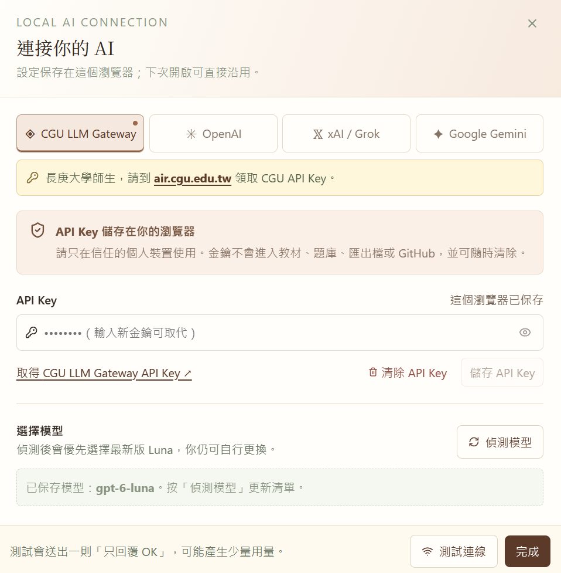
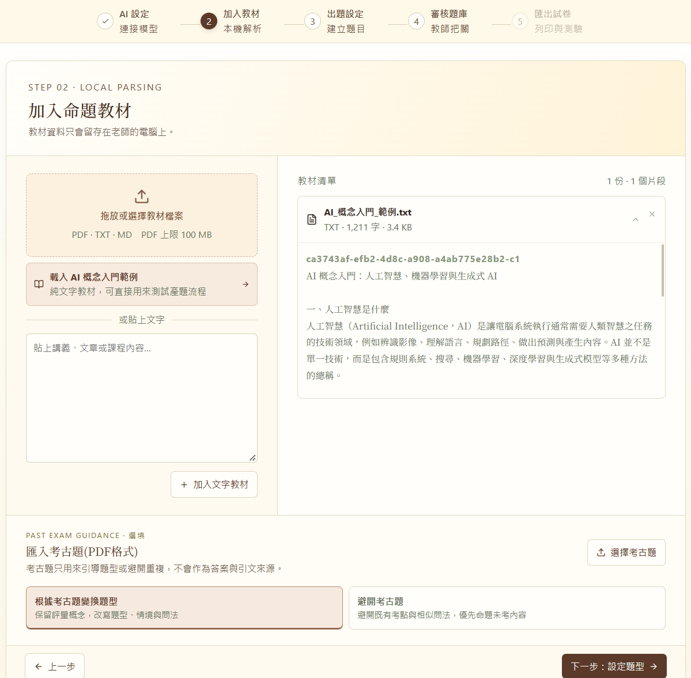
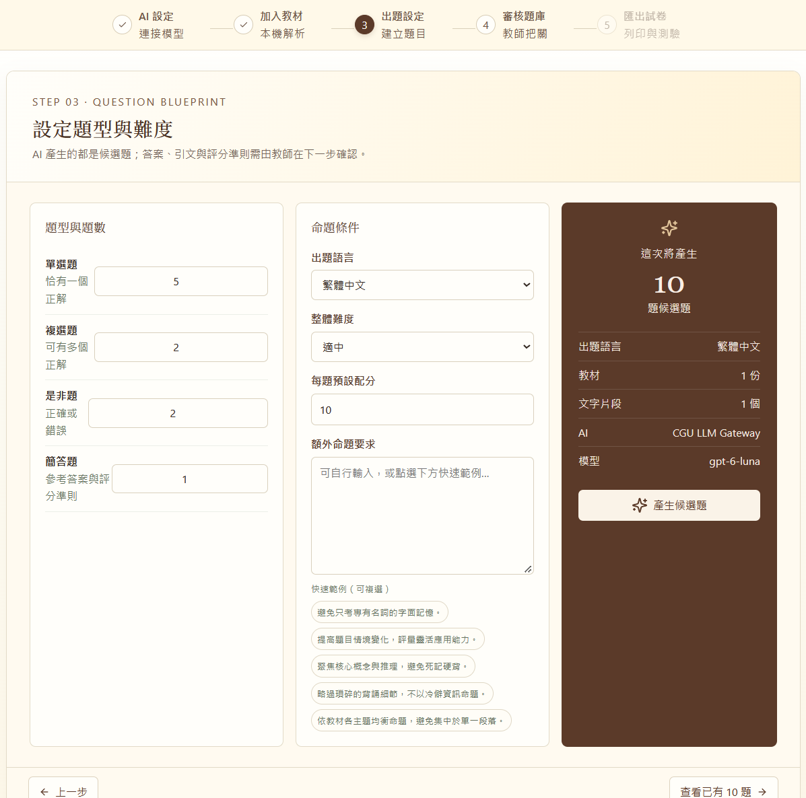
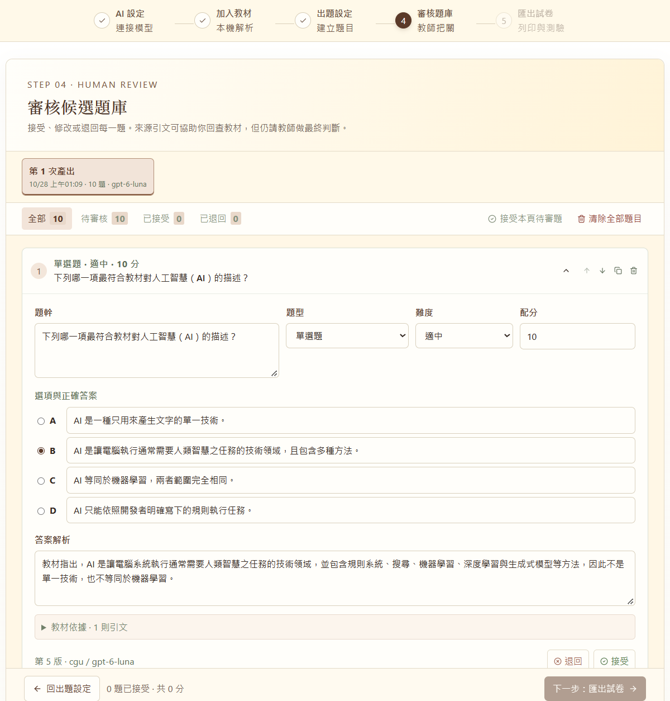
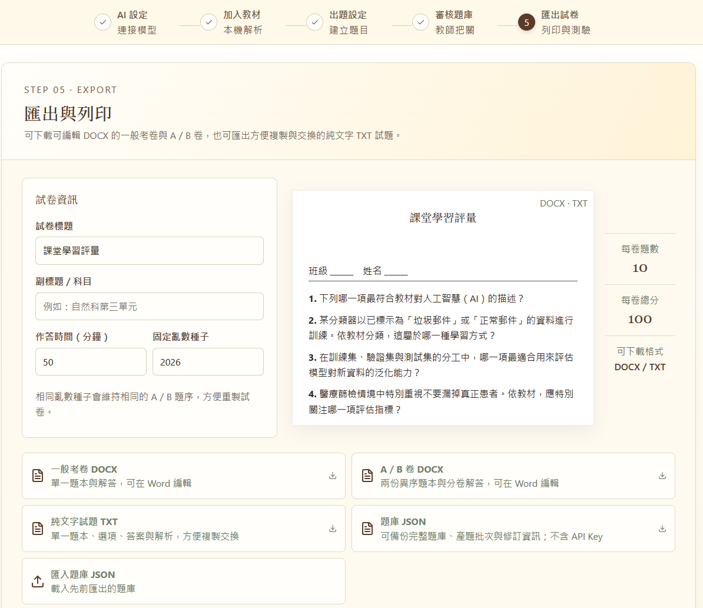

✎
QuizGenerator · 操作手冊
從教材到試卷，完成一套可審核的 AI 命題流程
本手冊以實際操作畫面說明五個步驟。每一頁都是獨立的 A4 投影片版面，可直接列印或另存為 PDF。
01
連接 AI02
加入教材03
設定題型04
審核題庫05
匯出試卷
連接 AI02
加入教材03
設定題型04
審核題庫05
匯出試卷
閱讀方式：畫面中的按鈕名稱與手冊文字一致；遇到錯誤時，先依頁面提示清除題目，再重新產生。
STEP 01 · BRING YOUR OWN KEY
連接你的 AI
先選擇要使用的 AI Provider，再進入設定面板儲存 API Key 與模型。
- 在標題列點選「AI 設定」，開啟連線設定。
- 選擇 CGU LLM Gateway、OpenAI、xAI／Grok 或 Google Gemini。
- 完成設定後，首頁會顯示目前 Provider 與模型；按「下一步：加入教材」繼續。
CGU 使用提示：選擇 CGU LLM Gateway 時，這個區塊會顯示長庚大學校園線稿背景，方便辨識目前的校園 Gateway 設定。

AI CONNECTION SETTINGS
儲存 API Key、偵測模型
API Key 只保存在目前瀏覽器；請在自己信任的裝置上使用。
- 在 Provider 分頁選擇服務；CGU 使用者可從 air.cgu.edu.tw 取得 Key。
- 貼上 API Key，按「儲存 API Key」；已有 Key 時輸入新值即可取代。
- 按「偵測模型」更新可用清單，選定要使用的模型。
- 可按「測試連線」確認模型能正常回覆，再按「完成」。
安全提醒：金鑰不會寫入教材、題庫、匯出檔或 GitHub；離開共用電腦前，請使用「清除 API Key」。

STEP 02 · LOCAL PARSING
加入命題教材
教材先在瀏覽器本機解析，確認文字內容後才會交給 AI 命題。
- 拖放或選擇 PDF、TXT、MD 教材；PDF 上限為 100 MB。
- 也可以按「載入 AI 概念入門範例」快速體驗流程。
- 若不想上傳檔案，可在文字框貼上講義，再按「加入文字教材」。
- 需要時可另行匯入考古題，選擇「變換題型」或「避開考古題」。
檢查重點：教材清單會顯示檔名、字數與片段；展開項目即可先閱讀擷取文字。

STEP 03 · QUESTION BLUEPRINT
設定題型與難度
先定義題庫藍圖，AI 只會產生候選題，最後仍由教師審核。
- 在左側輸入單選、複選、是非與簡答題的題數。
- 設定出題語言、整體難度與每題預設配分。
- 可在「額外命題要求」輸入限制，也可點選快速範例。
- 確認右側總題數後，按「產生候選題」。
建議：先用少量題目測試教材與模型，再逐步增加題數，方便快速檢查結果。

STEP 04 · HUMAN REVIEW
逐題審核候選題庫
接受、修改或退回每一題；來源引文用來回查教材，最終判斷仍由教師完成。
- 展開題目後檢查題幹、選項、答案、解析與教材引文。
- 可直接編輯內容、調整題型／難度／配分，或使用上下移動與複製。
- 按「接受」保留題目，按「退回」移除不適合的候選題。
- 若看到格式驗證錯誤，請點選「清除重新出題」後再試。
批次操作：上方可篩選待審核／已接受／已退回，也可一次接受本頁待審題。

STEP 05 · EXPORT
匯出、列印與交換
只匯出已接受的題目，依需求選擇 Word、純文字或題庫備份格式。

一般考卷 DOCX單一題本與解答，可在 Word 編輯。
A／B 卷 DOCX兩份異序題本與分卷解答。
純文字 TXT方便複製、交換或貼到其他系統。
題庫 JSON備份題目、批次與修訂資訊，不含 API Key。
列印提示：本手冊本身可用上方「列印／另存 PDF」輸出 A4；QuizGenerator 產生的 DOCX 則可在 Word 中調整版面後列印。